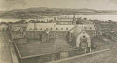

|


| |
|

|
| THE EMBRYONIC PERIOD
Mathieu's life was not easy; he knew
no more peace in Canada than he had in France.
On top of the hard work of
clearing land, the harsh climate, the effort of adapting to this
new world, and the fire that destroyed his house and belongings on March 12,
1651, there was the first Franco-Iroquois war.
It began in 1641 and would last twenty-five years, leaving the colony
in a wretched and precarious state. It was a fierce
but intermittent war between the Iroquois and the settlers, a war
of ambushes. The Iroquois attacked by surprise, often during
work in the fields, killing the men and carrying off women and
children. This was the time of the
"Canadian Martyrs" and the complete destruction of
Huronia (near the Great Lakes). And since
the fur trade was carried on from Huronia, the colony was on the verge of bankruptcy.
This is when the battle of the Long-Sault is said to have taken place, in which Dollard des Ormeaux
is said to have died
fighting the Iroquois to free the fur
route.
The Jesuits, who owned
large tracts of land and wanted to calm things down, took in the few
surviving Hurons at Jeune-Lorette near Quebec and offered
the
Iroquois land on their seigneury near Montréal
(today Kahnawake and Kanesatake). Some accepted, including Kateri
Tekakwitha, who converted and whom the Church
uses as an emblem of its missionary work.
In 1653, when she arrived in the colony,
Marguerite Bourgeoys wrote: "In Quebec everything is so poor
that it is pitiful."

|
|
A TRADING-POST COLONY
Since Francis I, every King of France had signed fine
letters of intent to people New France and convert the
Indigenous peoples. But they gave a monopoly to
merchant companies and, in reality, the situation was
deplorable. Kings and companies came and went, and the
colony withered along the St. Lawrence.
When Mathieu Choret came to settle there in 1647, it was the Compagnie
des Cent-Associés that held the monopoly. It too worked
above all for the interests of its shareholders (nothing new under
the sun, as they say) and did not make every effort needed to
bring in and support settlers. New France grew
above all through the work of the Seigneurs, those "entrepreneurs"
who recruited settlers and placed them on their seigneuries to
develop them. A core of early
habitants formed who hung on to stay in this country. Their
children married one another, and the number of people born
in the country gradually grew. Their interests diverged from those of the
Compagnie des Cent-Associés and of the central government; their
grievances went unheard, but they held firm and stayed
in the country.
The settlers, few in number and scattered over a large territory, could
rely only on themselves for defence. Yet none of these
people had come to Canada to fight, and the protection
of civilians was not provided by the Company or the King. The
settlers banded together, as far as possible, to work in the
fields, so they could better defend themselves if attacked. In the inventories of the
settlers' goods in later censuses, we notice that the first item
listed for every family is a gun.
The settlers also banded together economically by forming the Compagnie des
Habitants. This let them trade wheat for furs with their Indigenous
allies, which they then bartered, through
the Company, for goods from France. But the
war threatened the fur trade, which was the economic basis of the
country, and goods were often scarce besides. In the summer of
1655, for example, of the five ships that left France for Canada, only two arrived
safely.
Mathieu Choret's life unfolded against this whole
background, and we can say that through his presence,
his work and his descendants he took part in this collective effort
made in the early days of New France.

|
|
THE HÔTEL-DIEU OF QUEBEC |
|
Mathieu
dies on March 27, 1664, at the Hôtel-Dieu in Quebec. He is buried the
next day in its cemetery. Was he taken from Beauport to Quebec
and hospitalized because of an accident, an illness, a war
wound...? We do not know what caused his death,
at about 44. Most of Mathieu's children would also be
buried in this cemetery, as would Sébastienne.
Death
record of Mathieu Chouret
In the year 1664, on the 28th of March, was buried by the clergy of this
church, in the
cemetery of the Hôtel-Dieu, Mathieu Chouret, who died the day before
in the said place
after receiving the Sacraments.
|
|
The Duchesse d'Aiguillon, niece of the powerful Cardinal Richelieu, after reading the Jesuit "Relations",
decided to do a good work by founding a hospital whose
aim would be to evangelize the Indigenous peoples through health
care. She financed the project and on August 16, 1637, signed
the founding contract with the Augustinian Hospitaller Sisters of the Hôtel-Dieu
of Dieppe. The Augustinian Order, whose origins
go back to the dawn of the Middle Ages, was a very well-organized community running
several hospitals in France. The sisters
then provided a key part of the project: the people.
Three nuns volunteered to make the perilous
crossing of the Atlantic to America.
|

Detail from the map by Gédéon de Catalogne, made in
1709. |
|
And so, on August 1, 1639, three Hospitallers from Dieppe landed
in Quebec and laid the foundations of the first hospital in America
north of Mexico |
|

The Hôtel-Dieu of Quebec in the 19th century |
Standing on its present site (at the top of the Côte du Palais) since 1644,
the Hôtel-Dieu, heir to the medieval institutions, was first set up
for missionary purposes and gave the sick care that was spiritual
as well as bodily. They were lodged in two wards holding
about forty beds. |
|
Despite difficult
circumstances and very modest means, the Hôtel-Dieu of Quebec was not
the antechamber of death, since nine patients out of ten left it cured
or at least relieved. All the inhabitants were entitled to the
Hospitallers' care; the archives record a hospital
stay by Sébastienne Veillon in April 1690. The sisters
also cared for the people who arrived
sick on the ships that came every summer.
Besides the foundresses, two major figures stand out in this period:
Catherine de St-Augustin (1632-1668), a missionary at the age of 16,
who arrived in Quebec in 1648 and left the Augustinians a precious spiritual heritage;
and Michel Sarrazin
(1659-1734), king's physician and botanist, who practised at the Hôtel-Dieu
for 45 years. Over his long and brilliant career he
performed, among other things, the first recorded operation
on a cancer, in May 1700.
|
|
|
| INVENTORIES AFTER DEATH |
| In New France
in the 17th and 18th centuries, inheritance was governed by the
Coutume de Paris (Custom of Paris), under which property was divided among the heirs
: half went to the surviving spouse, while the other
half was shared equally among the children. In the case of
land, one of the children would generally buy out the others' shares and
gradually rebuild the family patrimony.
When a deceased person
left minor children, a notaire was asked to draw up a
deed found nowhere else in North America: the inventaire après
décès (inventory after death). The notaire would draw up a very
detailed inventory of the estate, from the land, the house and the
barn to the furniture, the utensils and even the debts.
On August 9, 1664,
Sébastienne Veillon calls in the notaire Paul Vachon and
has him draw up the inventory of the goods she will share with her
children before her remarriage. From this document we know that the
Chorets owned a few guns, cupboards, an impressive set of
cookware, livestock and grain, a house, a stable and
a farm whose wheat had not yet been harvested.
|
| THE NOTAIRE PAUL VACHON |
| The notaire Paul Vachon turns up often in the lives
of the Chorets. He is Mathieu's notaire and would be that of all his
children; he would draw up their marriage contracts and, in several cases, attend them
as a witness. He would also draw up the contract for Sébastienne's second
marriage. He steps in on Mathieu's behalf in
a dispute with neighbours who were taking the liberty of nibbling away at
his
land. Mathieu has the boundary lines of
his land surveyed again and takes his case to the Sovereign Council, which rules in his favour. It is
his notaire who, on February 22, 1664, five weeks before his
death, hands him the Council's written decision that the boundaries of his land
must
be respected and that he remains the full owner of all the
land granted by the Jesuits in March 1649.
Paul Vachon, from Poitou, was born around 1630. In
1653 he married, in Quebec, Marguerite Langlois, daughter of Noël Langlois
( who in 1666 would marry, as his second wife, Marie Crevet, the widow of Robert
Caron, our ancestor in the Caron line through Marie-Anna Caron,
wife of Rosario Charette).
Paul Vachon was a mason before becoming a notaire. At that time you
became a notaire if you could handle a quill pen and obtained a
post either from the intendant, as royal notaire, or
from a seigneur, as seigneurial notaire. Paul Vachon was
appointed notaire of the seigneury of Notre-Dame-des-Anges by the Jesuits in
1656; he then also became notaire of the seigneury of Beauport,
and later of those of the Île d'Orléans and of
Beaupré.
Paul Vachon lived in Beauport, in the bourg du Fargy (so close
to Mathieu), on land that he farmed; he owned
another farm on the Île d'Orléans, where he installed a
tenant farmer. After practising as a notaire for nearly forty years,
he retired in 1693, having drawn up more than 1,500
deeds. The end of his life was tragic, since within
six months he saw four of his children, a daughter-in-law and six grandchildren die
in the smallpox epidemic of 1702-1703. He died of it
himself on June 24, 1703, and was buried in Beauport. |
|
|
|